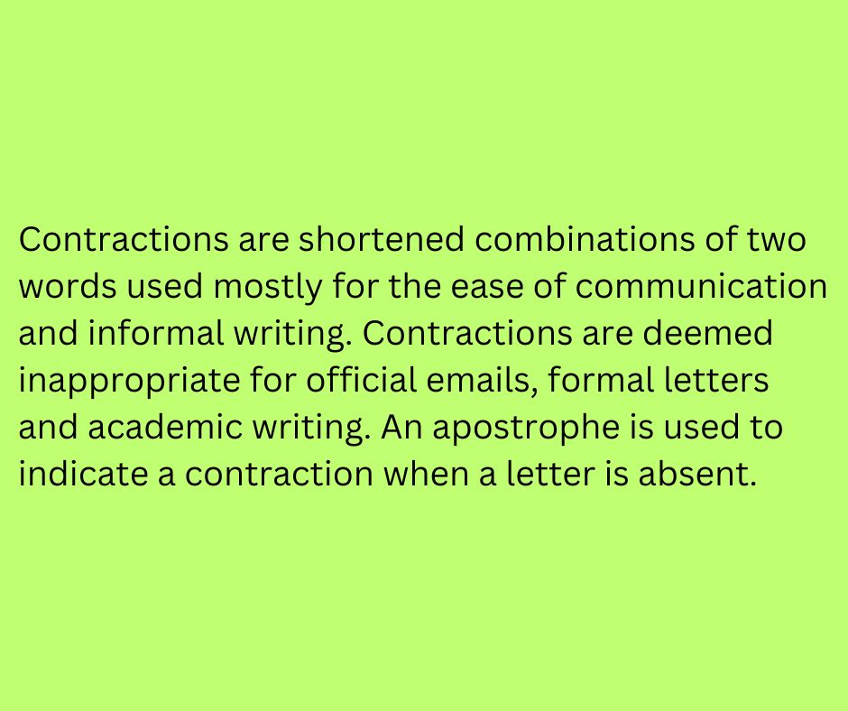

Contractions are made in the following pairs:
1. Pronouns and Primary helping verbs
2. Pronouns and Modals
3. Primary Helping verbs and NOT
4. Modals and NOT
5. Modals and Primary helping Verbs
6. Contractions can come after names, nouns, question words, and the words "here, there, and now."
7.Transitive Verb and Pronoun: Exception!